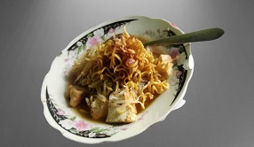

Welcome To
Welcome To Popular Menus
Rujak Cingur
salah satu makanan tradisional asal surabaya, makanan ini disebut rujak cingur karena bumbu olahan yang digunakan adalah petis udang dan irisan cingur sapi.

Gado-Gado
Makanan khas Jakarta berisi sayur-sayuran yang direbus, irisan telur, tahu, serta taburan bawang goreng dan kerupuk. Lalu disiram dengan bumbu kacang diatasnya.

Lontong Mie
Makanan khas Surabaya yang memiliki komposisi seperti tahu, lontong, kecambah, mie. kemudian disiram dengan kuah. untuk makannya, aduk perlahan agar petis tercampur merata.
Kontak
Anda dapat menghubungi melalui : Whatsapp